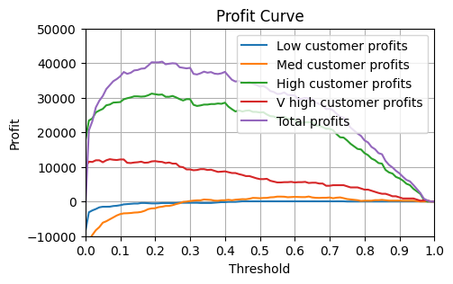

from pathlib import Path
from typing import Tuple
import matplotlib.pyplot as plt
import numpy as np
import pandas as pd
from sklearn.compose import ColumnTransformer, make_column_selector
from sklearn.metrics import confusion_matrix, roc_auc_score, log_loss, ConfusionMatrixDisplay
from sklearn.model_selection import train_test_split
from sklearn.pipeline import Pipeline
from sklearn.preprocessing import OneHotEncoder
from xgboost import XGBClassifier
pd.set_option("display.max_columns", None)
PROJECT_ROOT = Path.cwd().parent.parent
plt.rcParams["figure.facecolor"] = (1, 1, 1, 0) # RGBA tuple with alpha=0
plt.rcParams["axes.facecolor"] = (1, 1, 1, 0) # RGBA tuple with alpha=0Profit Curves
Getting the data
The dataset is from the Telco Customer Churn Kaggle Competition. The target is the simple binary outcome in the Churn column.
data = pd.read_csv(f"{PROJECT_ROOT}/data/WA_Fn-UseC_-Telco-Customer-Churn.csv", low_memory=False)data| customerID | gender | SeniorCitizen | Partner | Dependents | tenure | PhoneService | MultipleLines | InternetService | OnlineSecurity | OnlineBackup | DeviceProtection | TechSupport | StreamingTV | StreamingMovies | Contract | PaperlessBilling | PaymentMethod | MonthlyCharges | TotalCharges | Churn | |
|---|---|---|---|---|---|---|---|---|---|---|---|---|---|---|---|---|---|---|---|---|---|
| 0 | 7590-VHVEG | Female | 0 | Yes | No | 1 | No | No phone service | DSL | No | Yes | No | No | No | No | Month-to-month | Yes | Electronic check | 29.85 | 29.85 | No |
| 1 | 5575-GNVDE | Male | 0 | No | No | 34 | Yes | No | DSL | Yes | No | Yes | No | No | No | One year | No | Mailed check | 56.95 | 1889.5 | No |
| 2 | 3668-QPYBK | Male | 0 | No | No | 2 | Yes | No | DSL | Yes | Yes | No | No | No | No | Month-to-month | Yes | Mailed check | 53.85 | 108.15 | Yes |
| 3 | 7795-CFOCW | Male | 0 | No | No | 45 | No | No phone service | DSL | Yes | No | Yes | Yes | No | No | One year | No | Bank transfer (automatic) | 42.30 | 1840.75 | No |
| 4 | 9237-HQITU | Female | 0 | No | No | 2 | Yes | No | Fiber optic | No | No | No | No | No | No | Month-to-month | Yes | Electronic check | 70.70 | 151.65 | Yes |
| ... | ... | ... | ... | ... | ... | ... | ... | ... | ... | ... | ... | ... | ... | ... | ... | ... | ... | ... | ... | ... | ... |
| 7038 | 6840-RESVB | Male | 0 | Yes | Yes | 24 | Yes | Yes | DSL | Yes | No | Yes | Yes | Yes | Yes | One year | Yes | Mailed check | 84.80 | 1990.5 | No |
| 7039 | 2234-XADUH | Female | 0 | Yes | Yes | 72 | Yes | Yes | Fiber optic | No | Yes | Yes | No | Yes | Yes | One year | Yes | Credit card (automatic) | 103.20 | 7362.9 | No |
| 7040 | 4801-JZAZL | Female | 0 | Yes | Yes | 11 | No | No phone service | DSL | Yes | No | No | No | No | No | Month-to-month | Yes | Electronic check | 29.60 | 346.45 | No |
| 7041 | 8361-LTMKD | Male | 1 | Yes | No | 4 | Yes | Yes | Fiber optic | No | No | No | No | No | No | Month-to-month | Yes | Mailed check | 74.40 | 306.6 | Yes |
| 7042 | 3186-AJIEK | Male | 0 | No | No | 66 | Yes | No | Fiber optic | Yes | No | Yes | Yes | Yes | Yes | Two year | Yes | Bank transfer (automatic) | 105.65 | 6844.5 | No |
7043 rows × 21 columns
target = "Churn"
X_train, X_test, y_train, y_test = train_test_split(
data.drop(target, axis=1), data[target] == "Yes", test_size=0.2, random_state=0
)
cols_to_use = [
"tenure",
"PhoneService",
"MultipleLines",
"InternetService",
"OnlineSecurity",
"OnlineBackup",
"DeviceProtection",
"TechSupport",
"StreamingTV",
"StreamingMovies",
"Contract",
"PaperlessBilling",
"PaymentMethod",
"MonthlyCharges",
]Training a model
preprocessor = ColumnTransformer(
transformers=[
(
"one_hot",
OneHotEncoder(),
make_column_selector(dtype_include="object"),
),
],
remainder="passthrough", # Leave numerical variables unchanged
)
pipeline = Pipeline([("preprocessor", preprocessor), ("classifier", XGBClassifier())])
pipeline.fit(X_train[cols_to_use], y_train)
y_pred = pipeline.predict_proba(X_test[cols_to_use])[:, 1]
roc_auc = roc_auc_score(y_test, y_pred)
log_loss_val = log_loss(y_test, y_pred)print(f"ROC AUC Score: {roc_auc_score(y_test, y_pred)}")
print(f"GINI: {2 * roc_auc_score(y_test, y_pred) - 1}")
print(f"Log loss: {log_loss(y_test, y_pred)}")ROC AUC Score: 0.8152565467986469
GINI: 0.6305130935972938
Log loss: 0.4718305882942505Plotting our predictions
We can plot the distribution of the model’s predictions like so
fig, ax = plt.subplots(figsize=(5, 3))
ax.hist(y_pred, bins=100, label="Predictions")
ax.set_xlim(0, 1)
ax.set_xlabel("Predicted probability")
ax.set_ylabel("Frequency")
ax.set_title("Histogram of predicted probabilities")
plt.show()Picking a decision threshold from here is not always obvious. We can see the trade offs by plotting confusion matrices for a range of thresholds.
fig, axes = plt.subplots(1, 3, figsize=(9, 3), sharey=True)
for i, threshold in enumerate([0.1, 0.5, 0.9]):
cm = confusion_matrix(y_test, (y_pred > threshold).astype(int))
ConfusionMatrixDisplay(cm, display_labels=pipeline.classes_).plot(ax=axes[i], colorbar=False)
if i != 0:
axes[i].set_ylabel(None)
axes[i].set_title(f"Threshold: {threshold}")
plt.show()
The payoff matrix
We can use a payoff matrix to help us decide which threshold to use. This is a table that shows how much retaining a customer is worth to us, and how much it costs us to retain them.
For instance, say the matrix looks like the one below:
payoff_matrix = np.array(
[
[0, 0],
[-80, 200],
]
)
fig, ax = plt.subplots(figsize=(5, 3))
norm = plt.Normalize(vmin=payoff_matrix.min(), vmax=payoff_matrix.max())
colormap = plt.cm.viridis
ax.imshow(payoff_matrix, cmap="viridis", norm=norm)
ax.set_xticks(np.arange(2), ["False", "True"])
ax.set_xlabel("Would have churned")
ax.set_yticks(np.arange(2), ["False", "True"])
ax.set_ylabel("Were given discount")
ax.set_title("Payoff Matrix (£)")
for i in range(payoff_matrix.shape[0]):
for j in range(payoff_matrix.shape[1]):
cell_value = payoff_matrix[i, j]
text_color = "black" if np.array(colormap(norm(cell_value))[:3]).mean() > 0.5 else "white"
ax.text(j, i, cell_value, ha="center", va="center", color=text_color)
plt.show()This matrix says that retaining a customer who was going to churn by giving them a discount is woth £200 to us. It also says that giving a customer who wasn’t going to church a discount costs us £80. The payoffs for the scenarios where we don’t give a discount are set to 0.
Let’s combine our confusion and payoff matrices to see how much deploying this model could be worth.
If we used the 0.5 threshold we would end up with:
\[ \begin{array}{cccc} & 189 & \times & 200 & \\ + & 179 & \times & -80 & \\ \hline = & 32430 & \\ \end{array} \]
So £23,480 of value created within our test set.
The profit curve
How do we know that the threshold we chose was the most profitable one? We can plot the profit curve to see how the profit changes as we change the threshold.
def profit_curve(y_true: np.ndarray, y_pred: np.ndarray, payoff_matrix: np.ndarray, n_points: int = 101) -> Tuple:
"""
Calculate profit curve for a binary classifier.
Args:
y_true (array-like): True labels.
y_pred (array-like): Predicted probabilities.
payoff_matrix (array-like): Payoff matrix.
n_points (int): Number of points to calculate.
Returns:
tuple: x and y values for the profit curve.
"""
thresholds = np.linspace(0, 1, n_points)
profits = []
for threshold in thresholds:
y_pred_binary = np.where(y_pred >= threshold, 1, 0)
cm = confusion_matrix(y_true, y_pred_binary)
profit = (cm * payoff_matrix.T).sum()
profits.append(profit)
return thresholds, profitsthresholds, profits = profit_curve(y_test, y_pred, payoff_matrix)def plot_profit_curve(*data, precision: int):
fig, ax = plt.subplots(figsize=(5, 3))
for tup in data:
thresholds, profits, label = tup
ax.plot(thresholds, profits, label=label)
ax.set_xlim([0, 1])
ax.set_xticks(np.arange(0, 1.1, 0.1))
ax.set_xlabel("Threshold")
y_min = (min(profits) // precision) * precision
y_max = ((max(profits) + precision - 1) // precision) * precision
ax.set_ylim([y_min, y_max])
ax.set_yticks(np.arange(y_min, y_max + 1, precision))
ax.set_ylabel("Profit")
ax.grid(True)
ax.legend(loc="best")
ax.set_title("Profit Curve")
plt.show()plot_profit_curve((thresholds, profits, "Model 1"), precision=10000)def find_best_threshold_and_profit(thresholds, profits):
"""Find the best threshold and profit.
Args:
thresholds (array-like): Threshold values.
profits (array-like): Profit values.
Returns:
tuple: Best threshold and profit.
"""
best_profit = max(profits)
best_threshold = thresholds[profits.index(best_profit)]
return best_threshold, best_profitbest_thresh, best_profits = find_best_threshold_and_profit(thresholds, profits)
print(f"Ideal threshold is {best_thresh:.2f} which yields profits of £{best_profits:.0f}")Ideal threshold is 0.22 which yields profits of £32360Limitations
Some limitations of the profit curve:
- It depends upon us knowing the value of true and false positive predictions. If your payoff matrix is meaningless, your profit curve will be too.
- It assumes that all customers are worth roughly the same. This may not be true in practice.
- We can only use it for classification problems like the “will they churn / won’t they churn” example above.
Using the profit curve to compare models
Let’s image with lose a feature so we have a new model. How will this affect our profit curve?
field_lost_in_broken_pipeline = "Contract"
new_cols_to_use = [col for col in cols_to_use if col != field_lost_in_broken_pipeline]
pipeline.fit(X_train[new_cols_to_use], y_train)
new_y_pred = pipeline.predict_proba(X_test[new_cols_to_use])[:, 1]
roc_auc = roc_auc_score(y_test, new_y_pred)
log_loss_val = log_loss(y_test, new_y_pred)
_, new_profits = profit_curve(y_test, new_y_pred, payoff_matrix)plot_profit_curve(
(thresholds, profits, "First model"),
(thresholds, new_profits, "New model"),
precision=10000,
)new_best_thresh, new_best_profits = find_best_threshold_and_profit(thresholds, new_profits)
print(f"Ideal threshold is {new_best_thresh:.2f} which yields profits of £{new_best_profits:.0f}")
print(f"Change in profit due to lost field: £{new_best_profits - best_profits:.0f}")Ideal threshold is 0.24 which yields profits of £30800
Change in profit due to lost field: £-1560Beyond Simple-Number Decision Thresholds
When we have some customers who are worth a lot more than others, it makes sense to focus our attention and discounts on them. We may therefore want to set different thesholds for different groups of customers.
fig, ax = plt.subplots(figsize=(5, 3))
data["MonthlyCharges"].hist(ax=ax, bins=20, color="lightblue")
precision = 10
x_max = ((data["MonthlyCharges"].max() + precision - 1) // precision) * precision
ax.set_xlim(0, data["MonthlyCharges"].max())
ax.set_xticks(np.arange(0, x_max + 1, precision))
ax.set_xlabel("Monthly Charges")
ax.set_ylim(0, 1200)
ax.set_yticks(np.arange(0, 1501, 250))
ax.set_ylabel("Count")
ax.set_title("Distribution of Monthly Charges")
plt.show()Let’s assume that the value of keeping a customer is 3 times their monthly charge. The cost of giving a discount to someone who wasn’t going to churn can stay at £80.
Let’s group customers in 3 groups based on the amount they pay per month. Each group will have a different payoff matrix based on the average monthly charge of the group.
def group_specific_profit_curve(
X_test: pd.DataFrame, y_test: pd.Series, y_pred: np.ndarray, low_thresh: float, high_thresh: float
):
in_group = (X_test["MonthlyCharges"] > low_thresh) & (X_test["MonthlyCharges"] <= high_thresh)
y_test_in_group = y_test[in_group]
y_pred_in_group = y_pred[in_group]
mean_monthly_charge = X_test["MonthlyCharges"][in_group].mean()
payoff_matrix = np.array(
[
[0, 0],
[-80, 3 * mean_monthly_charge],
]
)
thresholds, profits = profit_curve(y_test_in_group, y_pred_in_group, payoff_matrix)
return thresholds, profitsthresholds, low_profits = group_specific_profit_curve(X_test, y_test, y_pred, 0, 20)
_, medium_profits = group_specific_profit_curve(X_test, y_test, y_pred, 20, 60)
_, high_profits = group_specific_profit_curve(X_test, y_test, y_pred, 60, 100)
_, very_high_profits = group_specific_profit_curve(X_test, y_test, y_pred, 100, 200)total_profits = np.array([low_profits, medium_profits, high_profits, very_high_profits]).sum(axis=0)We can see from plotting the profit curve for each group that it makes sense to use different thresholds for different groups. Generally we want a lower threshold for higher value groups since the cost of losing them is greater.
We can also see that by doing this our total profit across all customers is higher than if we had used a single threshold for all customers.
plot_profit_curve(
(thresholds, low_profits, "Low customer profits"),
(thresholds, medium_profits, "Med customer profits"),
(thresholds, high_profits, "High customer profits"),
(thresholds, very_high_profits, "V high customer profits"),
(thresholds, total_profits, "Total profits"),
precision=10000,
)
thresh_low, profits_low = find_best_threshold_and_profit(thresholds, low_profits)
thresh_medium, profits_medium = find_best_threshold_and_profit(thresholds, medium_profits)
thresh_high, profits_high = find_best_threshold_and_profit(thresholds, high_profits)
thresh_very_high, profits_very_high = find_best_threshold_and_profit(thresholds, very_high_profits)print(f"Ideal threshold for low customers: {thresh_low}")
print(f"Ideal threshold for medium customers: {thresh_medium}")
print(f"Ideal threshold for high customers: {thresh_high}")
print(f"Ideal threshold for very high customers: {thresh_very_high}")Ideal threshold for low customers: 0.45
Ideal threshold for medium customers: 0.64
Ideal threshold for high customers: 0.19
Ideal threshold for very high customers: 0.07print(
f"""Profit with a signle threshold: £{best_profits}
Profit with flexible thresholds: £{(profits_low + profits_medium + profits_high + profits_very_high):.0f}"""
)Profit with a signle threshold: £32360
Profit with flexible thresholds: £44919References
- Machine Learning for Business Decision Optimization - Dan Becker